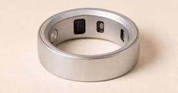
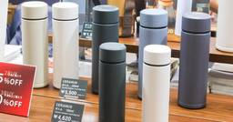

ギズモード・ジャパン
https://www.gizmodo.jp
日本最大のテクノロジー＆ガジェット専門メディア。YouTubeや記事を通じて、最新ガジェットの偏愛レビューから、AI／サイエンスの深掘りコンテンツまで幅広く発信しています。「みんなで探求する」を合言葉に、刺激的な未来の体験をシェアします。
フィード

破格の99ドル！ Oura Ring並みの機能にAIも付いたスマートリング「Interface」
ギズモード・ジャパン
99ドルという破格の安さでOura Ring並みのヘルスケア機能とAI音声操作を実現したスマートリング「Interface」の特徴や仕組みを解説します。
2時間前
暑いと思ったら、もう寒い。秋の服装問題、モンベルに頼ってみた 1
1
ギズモード・ジャパン
寒暖差の激しい秋の服装にお悩みですか。モンベルの薄手フリースや軽量シェルなど、体温調節に役立つ便利なアイテムをご紹介します。
3時間前

味の違いは明らか。京セラのマグボトルは淹れたてのコーヒーの味をキープしてくれる #SCAJ
ギズモード・ジャパン
あの京セラが、タンブラー？コーヒーの祭典『SCAJ』（会期は終了しています）で「コーヒーフェスに京セラ？」と思い、出展ブースに吸い寄せられ見つけたのが、「CERAMUG（セラマグ）」というマグボトル。京セラのセラミックス技術の強みを生かして…
3時間前
Ulanziのワイヤレス充電器が理想形すぎてビビった。まさか「浮かせる」とはね…
ギズモード・ジャパン
モニター下に浮かせて設置できるUlanziのMagSafeワイヤレス充電器をご紹介。デスク周りをすっきりと保ちながらスマホの定位置を作れる理想的な充電スタンドです。
4時間前
ファン付きベストの最後のピース。フードのおかげで頭もクール
ギズモード・ジャパン
TOOL JAPANで見つけたメカリンクのファン付きベスト「COOLER MASTER」を紹介。リュック型の保冷システムとフードで頭皮まで涼しい画期的な構造を解説します。
4時間前
世界最古の沈没船がみつかる。考古学のお宝ざっくざく 1
ギズモード・ジャパン
トルコ沖の海底で約4700年前の世界最古級の沈没船が発見されました。初期青銅器時代の貿易や当時の暮らしを伝える貴重な遺物の詳細を紹介します。
6時間前
iPadの誘惑から抜け出す。紙の書き心地×AI搭載の「AINOTE 2」が私のジャーナリングを変えた
ギズモード・ジャパン
紙のような書き心地とAI機能を両立した「AINOTE 2」の魅力をご紹介。日記やブレストに最適な書く特化型タブレットで、思考の整理をもっと快適に。
6時間前
HHKB、300台限定30万円のキーボードを販売。アルミ削り出しのこだわりボディ 1
ギズモード・ジャパン
HHKBの30周年を記念した限定300台のアルミ削り出し特別モデルHHKB Professional Eliteの特徴や価格を紹介します
8時間前
普通の写真、飽きちゃった。エフェクトを選ばないと撮れないハイテクなY2Kカメラ
ギズモード・ジャパン
チェキなのに、プリンタを内蔵せず、小型化に特化した富士フイルム「instax Pal」シリーズの新作「instax Pal2」（税込25,300円）。まるでかつてのフィルムカメラをミニチュアにしたようなルックス。味のある写真を簡単に撮れる機…
9時間前

排水溝のネット、フタに付けちゃえばよかったんだ
ギズモード・ジャパン
2024年2月16日の記事を編集して再掲載しています。これ1枚で心もスッキリ。台所の流しにある排水溝ですが、ゴミ受け（水切りカゴ）にネットをかけて生ゴミを受け止めている人は多いと思います。軽く絞れば水切りができ、そのまま捨てられますもんね。…
9時間前
自分のパスワードが流出してしまったらやること 2
ギズモード・ジャパン
最近週に何回かは「不審なログインがありました」とか「パスワードをお忘れですか？」的なメールが来ているような。スパムメールの時もあれば、本当に誰かがログインしようとしてる時もあったりで気が休まりません。パスワードが流出してしまったり、その可能性がある場合、何から始めたらいいか手順をまとめますね。
1日前
iPhone Duoの予約〜受け取りまで密着取材してみた。予約殺到は本当か？
ギズモード・ジャパン
iPhone Duoの予約から受け取りまでをライターが徹底密着取材。争奪戦のリアルな様子や発売日当日の購入体験を分かりやすくお届けします。
1日前
iPhone Duoに初日からベストフィットしているアプリたち。コレがよかったよ
ギズモード・ジャパン
iPhone Duoの発売初日に主要アプリの対応状況をレビュー。SlackやYahoo!乗換案内、Amazonプライムビデオなどの最適化された使い心地を紹介します。
1日前
iPhone Duoの納得できないところ6選
ギズモード・ジャパン
10月23日に発売されたApple初の折りたたみスマホ、iPhone Duo。早速ギズモード・ジャパン編集部でもゲットし、みんなで触ってるんですが賛否両論。今回は実際にiPhone Duoを使って感じた「納得できないところ」を紹介していきま…
1日前
“あったらいいな”が揃ってる！ サウンドバー「Sonos Beam Ultra」は映画にもよし、ゲームにもよし
ギズモード・ジャパン
新型サウンドバー「Sonos Beam Ultra」のレビュー。クリアな音質や没入感の高い空間オーディオ、便利な音声強化機能まで徹底解説。
1日前
結局、おもしろいほうがいいんだ。僕がiPhone 18 ProじゃなくiPhone Duoを選んだ理由
ギズモード・ジャパン
本日、iPhone Duoをゲットしてきました。昨日夕方まで、ショップから入荷連絡がなかったのでやきもきしていましたが、無事受け取ることができました。これまではiPhone 16を使ってきました。それまでは、iPhone 12 Pro Ma…
1日前
iPhone Duoに最適化されたアプリは、ストアで「Made for iPhone Duo」バッジが付くから見分けられる
ギズモード・ジャパン
iPhone Duoに最適化されたアプリは、App StoreのMade for iPhone Duoバッジで簡単に判別可能です。対応アプリの見分け方や開発者の最適化情報をご紹介します。
1日前
iPhone Duo純正ケース2つを試してみた。外ディスプレイを守るか、軽快さか…
ギズモード・ジャパン
うーん、どっちもいいな。本日、iPhone Duoが発売されました。僕は、午前10時にショップに受け取りに行き、無事ゲットしました。ありがとうございます、ありがとうございます。iPhone Duoを買ったら、まずやらなければならないことがあ…
1日前
PHPの重大な欠陥、実は2年前から兆候があった。なんで直せなかったの？ 1
ギズモード・ジャパン
えっ、2年前から気づいていたの？10月21日、多くのWebサービスが緊急メンテナンスに追われた、プログラミング言語PHP（ピーエイチピー）の脆弱性騒動。実は、今回修正された2件の脆弱性のうち、1件につながる不具合の兆候は、2024年の時点で…
1日前